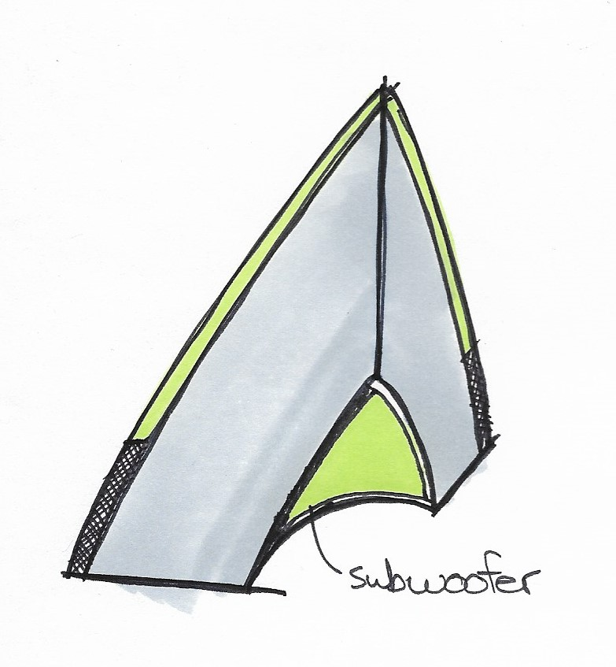
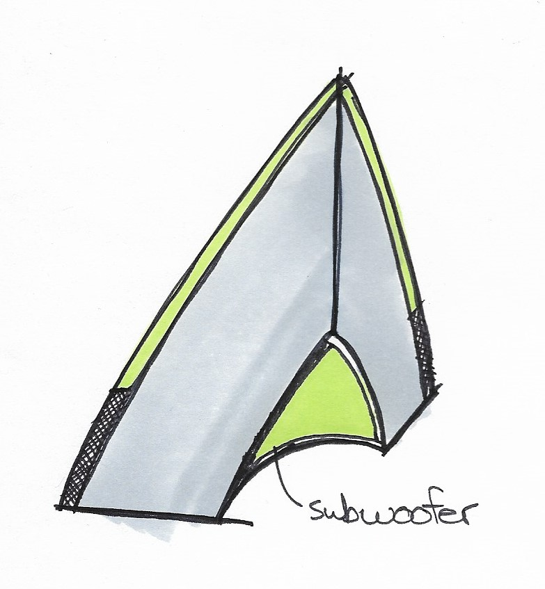

Pain Points
Portable speakers often do not have a full enough sound when placed in a room, so I wanted to design something that would work on the go while still being exciting at home.
There is also a lot of unutilized space on speakers that could be used to differentiate them.

 

Thumbnail drawings of some initial concepts.